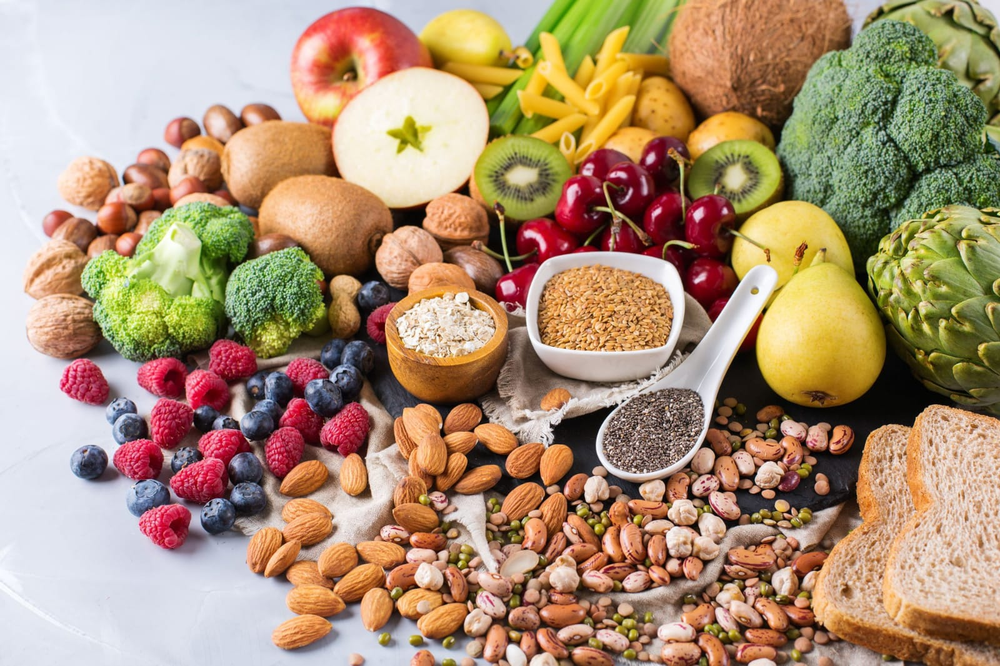
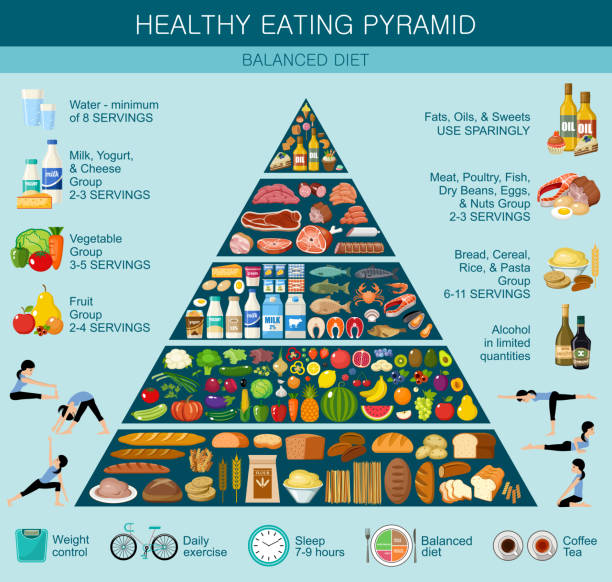

What is Diet?
In nutrition, diet is the sum of food consumed by a person or other organism. The word diet often implies the use of specific intake of nutrition for health or weight-management reasons (with the two often being related). Although humans are omnivores, each culture and each person holds some food preferences or some food taboos. This may be due to personal tastes or ethical reasons. Individual dietary choices may be more or less healthy. Complete nutrition requires ingestion and absorption of vitamins, minerals, essential amino acids from protein and essential fatty acids from fat-containing food, also food energy in the form of carbohydrate, protein, and fat. Dietary habits and choices play a significant role in the quality of life, health and longevity.

Why you need to plan your Diet?
1. Improve your nutrition
planning in advance, you can aim to have nutritionally well-balanced meals throughout the week. For example, you can make sure each of your dinners have the requisite veggies, protein, and grains. Planning your meals ultimately allows you to take control of your own personal nutrition needs. Whether you have to stick to a lower sodium diet or want only to eat whole grains and veggies, you can plan for it!
2. Make healthier choices
If you have to come up with something to eat last minute, you'll find yourself probably going out for dinner instead. As a result, you are most likely to end up exceeding your daily calorie and sodium intake! Even just stopping at the grocery store to pick up a last minute dinner may lead to poor choices. When you shop hungry, you are more likely to throw junk food into your cart.
3. Eat high quality foods
Homemade meals are almost always more nutrient-dense and filled with less calories, salt, and fat than takeout or quick ready-made options at your grocery store. Choosing your own recipes and ingredients for the week allows you to make important food choices, such as buying local meats or organic produce.
4. Save money
Having a meal plan prevents you from throwing out ingredients you forgot you had in the fridge. You can create meal plans that specifically allow you to use up whatever you have in your cupboards. You can also start fresh by creating grocery lists based off your meal plans. This way you’ll go to the grocery store with purpose rather than on the whim and you won’t come out with a dozen of random unhealthy food items, most of which you won’t eat. In addition, your meal plan will save you money by preventing you from ordering costly last minute takeouts.
5. Save time
Your set grocery lists will prevent you from wandering around the grocery store aimlessly and your meal plans will save you from having to think about what to eat every day. If you find yourself quite busy during the workweek, take some time out of the weekend to prepare most of your meals. Oats and frozen berries with yogurt in mason jars serve as great breakfasts for on-the-go. Prepared quinoa or pasta salads with mixed veggies and beans can serve as a work lunch for multiple days. Cook one or two larger dinners on the weekend so you'll have something for when you arrive home exhausted and don’t feel like cooking. Pre-portion and split appropriate servings for your family between the fridge and freezer for easy dinners. Soups, chilli, meatballs and marinated chicken breasts are all great for freezing. Re-heat while you prepare a quick salad or veggie slices, and you’ll have a delicious homemade meal!
6. Decrease Stress
The daily “what’s for dinner” thought that plague our minds throughout the day is a constant stress to have, but it's easily prevented by having a plan. You can always reuse meal plans and grocery lists to help cut down on planning and prep time. A two-week seasonal meal plan may be enough variety for your family.
We plan variety of Diets
Plan with Us!
Get Started
- Weight-Loss Diet
- Weight-Gain Diet
- Balanced Diet
- Diabetic Diet
- Ketogenic Diet
- Gluten-free Diet
- Plant-based Diet
- High-Protein Diet